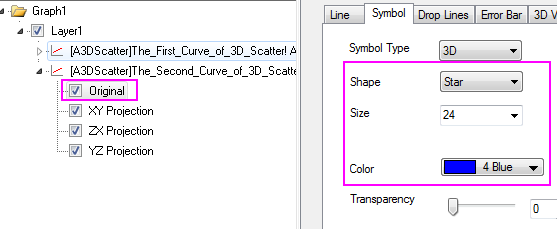

3D-Punktdiagramm mit Linienprojektionen von Kernbohrungsstandorten
3D-Scatter-LineProjection
Zusammenfassung
Dieses Tutorial zeigt Ihnen, wie Sie ein 3D-Punktdiagramm erstellen und die Projektionen der Diagramme anzeigen.
-

Origin-Version mind. erforderlich: Origin 2015 SR0
Schritte
Dieses Tutorial basiert auf der Datei Tutorial Data.opj im Verzeichnis <Origin-Verzeichnis>\Samples\.
- Öffnen Sie die Datei Tutorial Data.opj, navigieren Sie zu dem Ordner 3D Scatter with Line Projections und aktivieren Sie die Arbeitsmappe 3DScatterPlot.
- Aktivieren Sie das Arbeitsblatt The_First_Curve_of_3D_Scatter. Die Spaltenzuordnung für diese drei Spalten ist bereits auf XYZ gesetzt, so dass Sie direkt ein 3D-Punktdiagramm erstellen können. Markieren Sie Spalte C und wählen Sie Zeichnen: 3D: 3D-Punktdiagramm, um die Zeichnung zu erstellen.
- Aktivieren Sie das Arbeitsblatt The Second Curve of 3D Scatter. Markieren Sie Spalte C. Bewegen Sie dann die Maus an den rechten Rand des Auswahlbereichs, bis die Maus folgende Form annimmt: . Halten Sie die linke Maustaste gedrückt und ziehen Sie die markierten Daten in das neu erstellte Diagrammfenster. Das sich ergebende Diagramm sollte folgendermaßen aussehen:
- Klicken Sie doppelt auf die Z-Achse, um den Dialog Achse zu öffnen, gehen Sie bei im linken Bedienfeld ausgewähltem Z-Symbol zur Registerkarte Skalierung und drehen Sie die Z-Achse um, indem Sie die Werte für von und bis austauschen.
- Klicken Sie auf OK, um den Dialog zu schließen. Wählen Sie Format: Layer im Hauptmenü, um das Dialogfeld Details Zeichnung zu öffnen. Klicken Sie zum Aufrufen des Dialogs Details Zeichnung doppelt auf das Diagramm. Wenn das linke Bedienfeld nicht sichtbar ist, verwenden Sie die Schaltfläche
 unten links im Dialog, um es anzuzeigen. Erweitern Sie den Knoten Layer1. Wählen Sie die erste Zeichnung und aktivieren Sie dann Alle zusammen unter Abhängigkeiten bearbeiten. Dies wendet die gleichen Einstellungen auf die Originaldaten und alle Projektionen an.
unten links im Dialog, um es anzuzeigen. Erweitern Sie den Knoten Layer1. Wählen Sie die erste Zeichnung und aktivieren Sie dann Alle zusammen unter Abhängigkeiten bearbeiten. Dies wendet die gleichen Einstellungen auf die Originaldaten und alle Projektionen an.
- Erweitern Sie den ersten Zeichnungsknoten und aktivieren Sie die Kontrollkästchen Original und XY/XY/YZ-Projektion.
- Legen Sie die Optionen des Dialogs so fest, wie im untenstehenden Screenshot gezeigt. Um die Farbe zu bestimmen, klicken Sie auf die Schaltfläche Farbe und wählen Sie die gewünschte Option in der Auswahlliste Individuell. Da die Option Alle zusammen im vorhergehenden Schritt aktiviert wurde, werden diese Einstellungen nun automatisch auch auf die Projektionen verwendet.
- Wechseln Sie zur Registerkarte Symbole und setzen Sie die Form auf Würfel.
- Wählen Sie entsprechend die zweite Zeichnung aus und legen Sie die Dialogoptionen so fest, dass Sie mit denen auf den untenstehenden Screenshots übereinstimmen.
- 
- Das Diagramm sollte am Ende folgendermaßen aussehen: